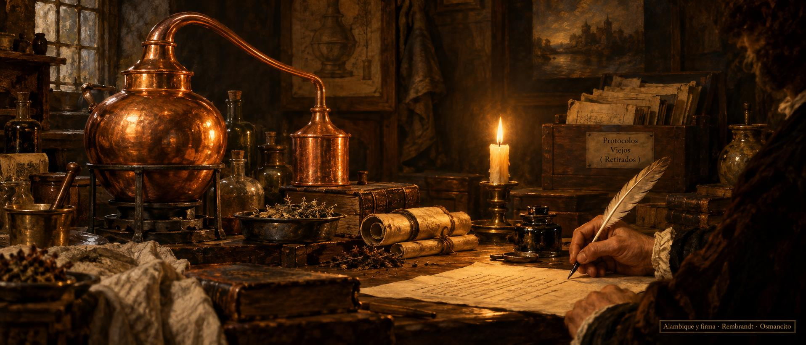

21 de octubre de 2026
Firma, alambique, enlaces y retiro

El día amaneció destilando: el libro del oficio de escribir abrió su currículo con un paisaje de niebla, y sus medidas, que ya habían dado lo que tenían, se retiraron del taller a la memoria de la casa, donde quedan como texto sin estruendo.
La tarde trajo un nacimiento: el taller estrenó su alambique de imágenes, un solo pintor para toda la destilería, que lee un fragmento, le extrae la carga, la tensión y el objeto, y entrega el encargo exacto que el motor necesita para pintar. Los protocolos viejos, que habían cumplido su ciclo, se retiraron con puerta de regreso y sin deuda.
Y la casa entera cambió de firma. Desde hoy, todo lo que salga de estas salas lleva el año y el nombre: el año en que se publica, y Osmancito. La firma vieja se recogió de todas las salas el mismo día, y el ánimo anduvo de mudanza alegre.
De noche llegaron los toques finales: cada dibujo de la casa se abre ahora a tamaño completo con un toque, como quien acerca la vela al cuadro, y el taller sumó un módulo para el cierre del día y un cuaderno nuevo donde el libro del oficio sigue destilándose.
© 2026 Osmancito
Parte del día: el alambique de imágenes estrenado, la firma nueva en todas las salas, los dibujos que se abren con un toque y los protocolos viejos jubilados en paz. Lectura en curso: Mientras Escribo, de Stephen King. En la copa: una bebida de alambiques nuevos.